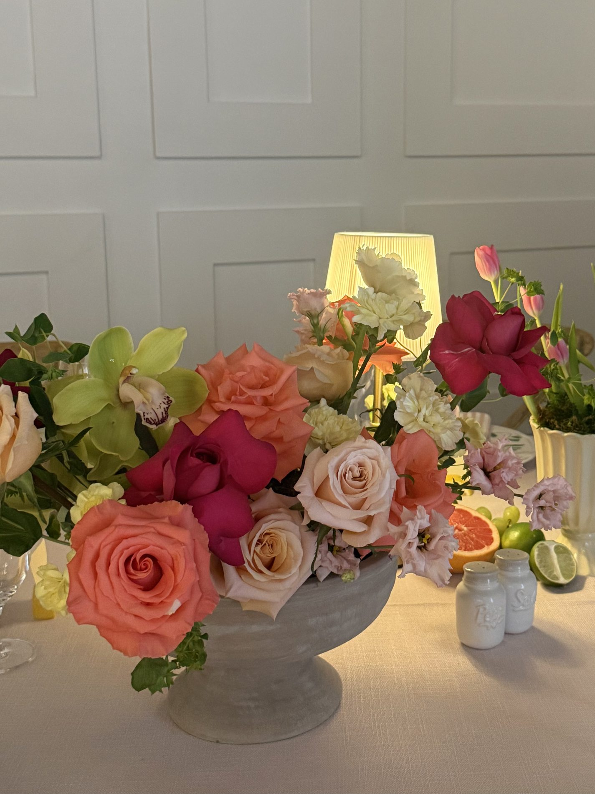
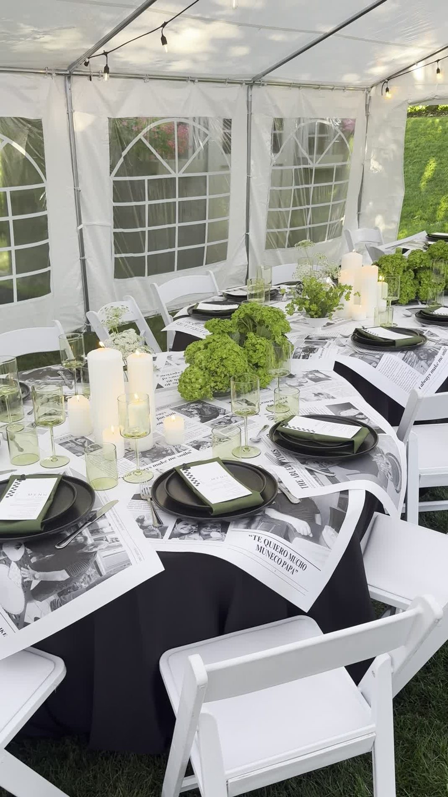
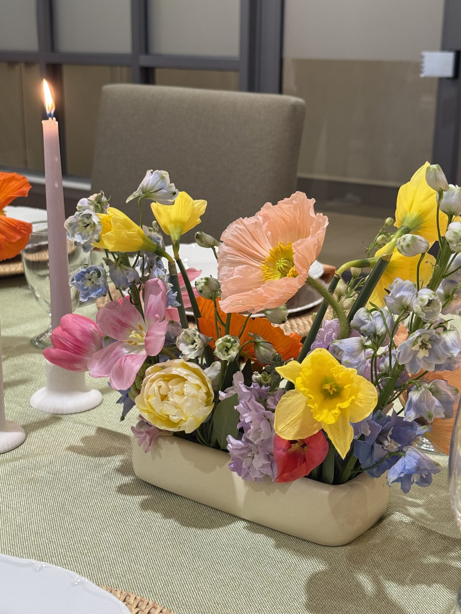
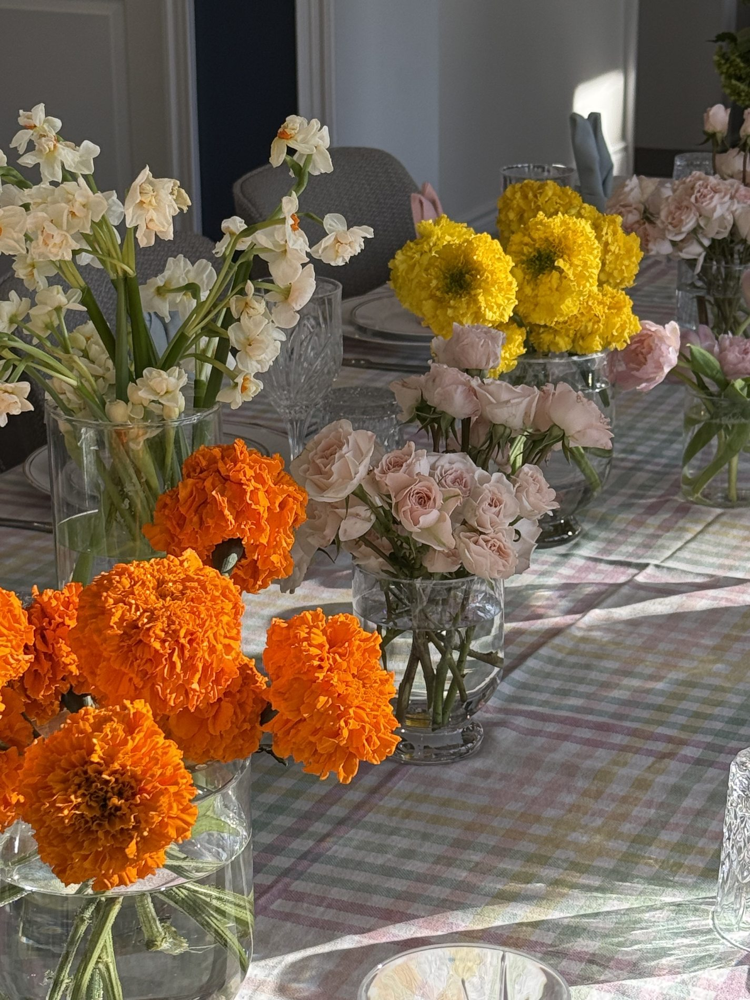
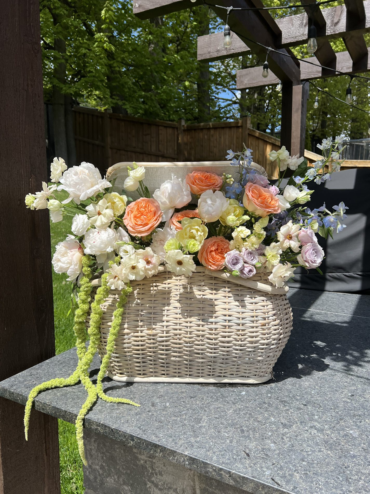
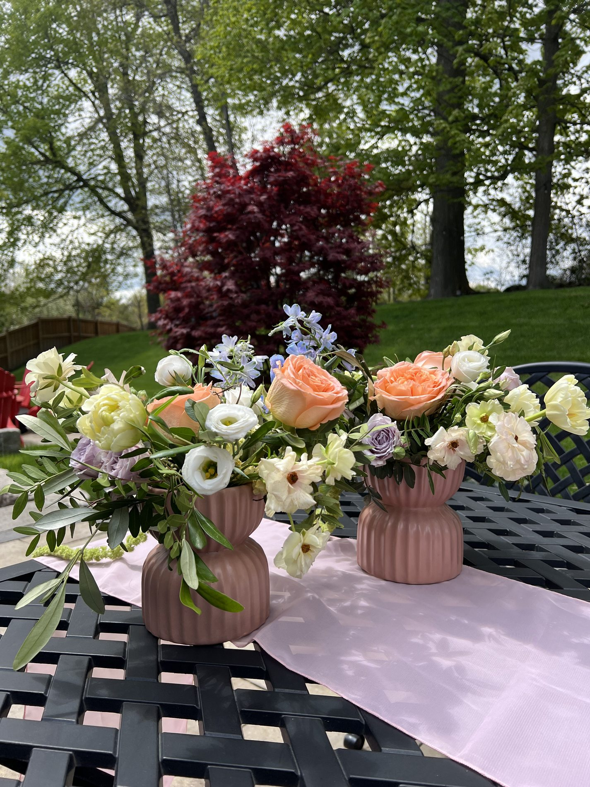
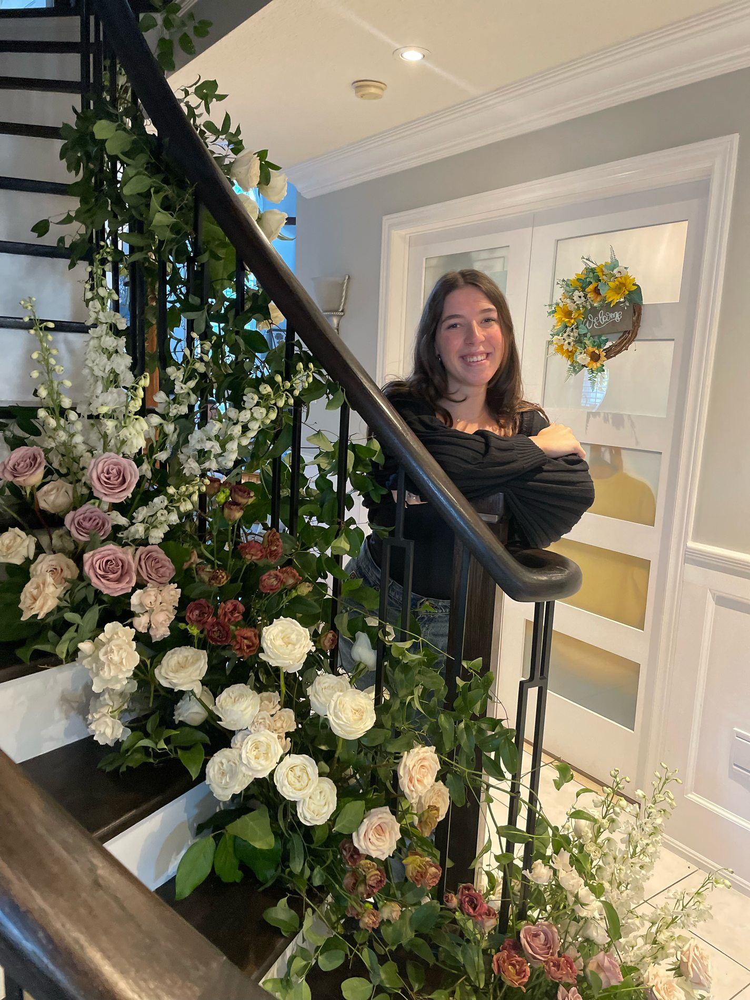

THE ART OF CELEBRATING BEAUTIFULLY
Where thegardenmeets the occasion.
Artfully composed florals for celebrations filled with beauty, character, and a touch of the unexpected.
Let’s talk flowers
A LOVE LETTER TO FLOWERS
Not just flowers.
A feeling.
Soft movement. Unexpected details. Colour that comes alive.
We believe the most beautiful flowers feel like they belong to you. From a bouquet held close to a table shared with your favourite people, we bring a little of the garden to your celebration.
Find your floral directionGarden elegance, with a little whimsy.
Thoughtfully imagined. Beautifully personal.THE PORTFOLIO / SELECTED STORIES
A few moments
in bloom.
Five occasions. Five different stories.
Every detail, designed to feel like you.
An intimate gathering, a grand celebration, a table overflowing with flowers. Explore the details and the stories behind each occasion.
 That’s AmoreAriana & Amedeo
That’s AmoreAriana & Amedeo
Celebrating PelusaAn 80th birthday celebration
A Milestone in BloomCarlos’s 80th birthday
A Blooming EasterA springtime celebration
AND ONE MORE / SEASONAL STORYSpring, UnscriptedAn Easter gatheringAn exuberant Easter tablescape in tangerine, butter yellow, blush and soft ivory — spontaneous, fresh, and full of life.Explore the collectionOUR FLOWERS, YOUR OCCASION
Considered.
Personal.
Beautifully you.
One occasion, one conversation,
one floral direction that feels right.
01Wedding flowers
From the bouquet you carry to the flowers that frame your celebration, we’ll create a considered floral direction around your style, setting, and priorities.
PERSONAL FLOWERS · CEREMONY · RECEPTION02Celebrations
Engagements, birthdays, showers, and gatherings deserve flowers that feel personal. A few beautiful details can make a room feel entirely your own.
ENGAGEMENTS · SHOWERS · MILESTONES03Something bespoke
For moments that call for something a little unexpected, we create custom floral details shaped around your vision, setting, and story.
YOUR IDEAS · A PERSONAL PROPOSALEvery proposal is personal. Your flowers, quantities, and agreed delivery or installation arrangements are tailored to your celebration.

Beautiful things have
a little soul.

A MOOD, NOT A RULEBOOK.A LITTLE INSPIRATION
What does your
garden feel like?
Start with a feeling. Explore a few directions, then let’s make something that’s yours.
Soft romance
Blush, buttercream, and a little movement. Gentle colour with a garden-grown spirit.

THE DETAILS, THE MOMENTS, THE FEELINGHELLO, I’M SOPHIA
A lifelong love
of beautiful things.
It started with a little girl’s dream of delivering flowers in a bright pink truck.
What began as a childhood fascination became a hands-on life in flowers. Today, I bring experience, curiosity, and a love for garden-inspired design to every arrangement.
For me, it begins with connection: your stories, the details you love, and how you want your celebration to feel. I’d love to hear what you’re imagining.
SophiaLet’s create something beautifulFROM AN IDEA TO IN BLOOM
A thoughtful process.
A personal beginning.
We’ll take it one beautiful step at a time.
Tell me your story.
Your date, your setting, the details you love. We begin with a conversation about what matters to you.
Find your direction.
We explore colours, priorities, and a bespoke floral proposal with a clear scope for your occasion.
Bring it into bloom.
We confirm the details, flowers, and agreed delivery or installation arrangements for your celebration.
A FEW THINGS YOU MIGHT WONDER
Before we
begin.
Where do you design flowers?
By Sophia Floral Design is based in Bolton, Ontario, serving Caledon, Kleinburg, Vaughan, and surrounding communities. Share your venue or location so we can discuss the logistics for your occasion.
How much should I plan to spend?
Each proposal is tailored to your flowers, quantities, and service needs. Sharing a comfortable budget helps us focus on what matters most and explore a realistic design direction together.
Can I choose specific flowers?
Absolutely share your favourites. Flower availability changes with the season, so we’ll discuss options and suitable alternatives that preserve the colours and overall feeling you love.
Do you offer delivery and setup?
Delivery, installation, and removal can be discussed as part of your proposal. The arrangements depend on your location, floral designs, and venue access. Your written scope will confirm what’s included.
How do I get started?
Share your celebration details below or contact Sophia directly. We’ll discuss your ideas and availability before developing a proposal. An enquiry alone does not reserve your event date.
SOMETHING BEAUTIFUL STARTS HERE
Let’s make
something
beautiful.
A date, a feeling, a few favourite flowers.
Tell me what you’re imagining.